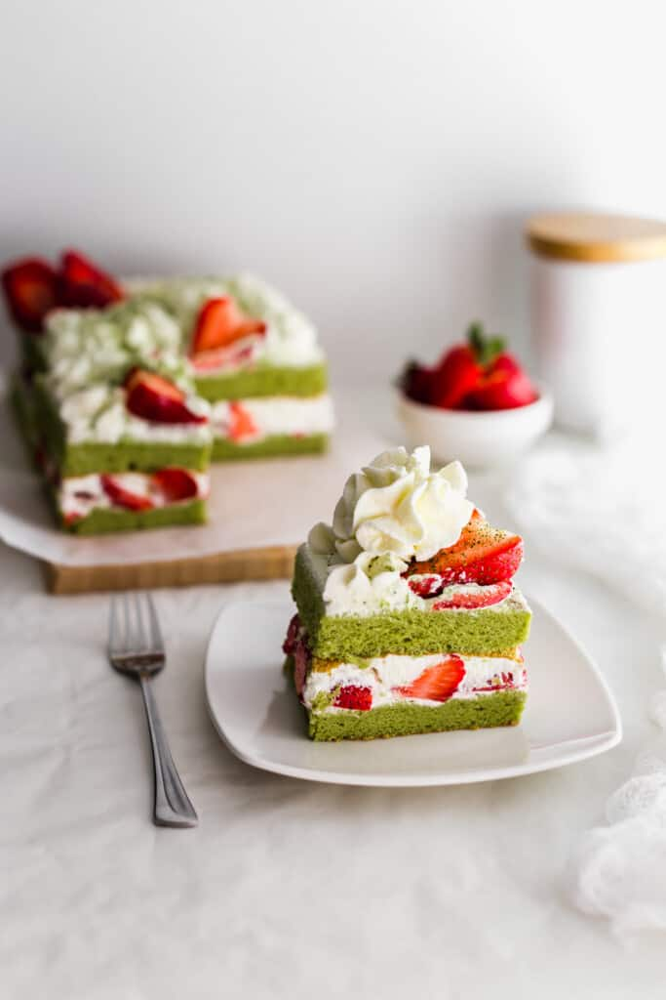

Home
Matcha Strawberry Shortcake

Ingredients for Cake
- 3 egg yolks
- 30 g granulated cane sugar
- 30 g avocado oil or any light vegetable oil
- 30 ml whole milk
- ½ teaspoon vanilla extract
- 45 g cake flour sifted
- 15 g matcha sifted
- 3 egg whites room temperature
- ¼ teaspoon cream of tartar or lemon juice
- 30 g granulated cane sugar
Ingredients for Whipped Cream
- 1 ½ C heavy whipping cream
- 1 tablespoon powdered sugar
- 1 teaspoon vanilla extract
Ingredients for Filling
- 2 C fresh strawberries sliced and patted dry
Instrctuions for Cake
- Prepare a 9" by 13" baking tray with parchment paper.
- Separate the egg whites from the egg yolks into 2 different bowls (one for egg whites and one for egg yolks).
- Tip: ensure your bowl for beating the egg whites is clean, with no traces of oil. Give the bowl and whisk a quick wipe with paper towel and a bit of lemon juice or vinegar prior to adding the egg whites.
- Preheat the oven to 375°F/191°C.
- Combine the egg yolks with 30g sugar and whisk together. Add in the oil, milk, vanilla extract and whisk again.
- Sift in the cake flour and matcha over top of the egg yolk mixture and fold gently to combine, until there are no lumps. Set aside.
- In a clean stand mixer bowl fitted with a whisk attachment, add the room temperature egg whites.
- Turn on the mixer on low speed.
- Once the egg whites become foamy with bubbles, add in a little cream of tartar (or lemon juice/vinegar).
- Gradually increase the speed of the mixer, and slowly pour in the granulated sugar.
- Continue to whip the egg whites until fluffy, shiny and reaches a soft peak. (The egg whites will form a curved tail at the end of the whisk).
- Using a spatula, fold about ⅓rd of the egg whites into the egg yolk batter. This will help to loosen up the egg yolk batter.
- Note: Folding is different than stirring. It takes a lighter hand to not deflate the whipped egg whites. To fold, take the spatula to the bottom of the mixture, and scoop up (a slow flick of the wrist) while turning the bowl about 90 degrees. Continue to turn the bowl and fold until the mixture is almost homogeneous.
- Add the next 3rd of the egg white mixture, and continue to fold until the egg whites are incorporated into the batter, but be sure not to overfold or the egg whites will be deflated.
- Transfer the cake batter to a 9″ by 13″ baking tray lined with parchment paper.
- Give the tray a few taps to release any trapped air bubbles.
- Bake at 375°F/191°C for 14-15 minutes, until the cake surface is golden brown, and dry to the touch. When lightly pressed, it will spring back.
- Remove the cake from the oven and immediately drop it from a height of 1′. This prevents the cake from shrinkage.
- Let the cake cool on a cooling rack for 10-15 minutes.
- Slice the cake in half, width-wise.
Instructions for Whipped Cream
- While the cake is cooling, make the whipped cream.
- Tip: A chilled bowl (in the fridge) will help the cream to whip up nicely.
- Pour the heavy cream into the chilled bowl, add in the powdered sugar and vanilla extract and use a whisk to whip to stiff peaks. (Don’t overwhip or the cream will turn into butter).
Assemble
- Place a matcha cake layer onto a piece of parchment paper.
- Spread a thin layer of whipped cream over the cake using an offset spatula.
- Add the sliced strawberries to cover the entire surface of the cake.
- Dollop and spread more whipped cream over the strawberries.
- Place the second matcha cake layer on top.
- Trim off the edges with a sharp, serrated knife.
- Spread another thin layer of whipped cream over the cake.
- Pipe additional cream on the top of the cake and decorate with strawberries and matcha powder.
- Chill the cake in the refrigerator for at least 1 hour prior to serving.